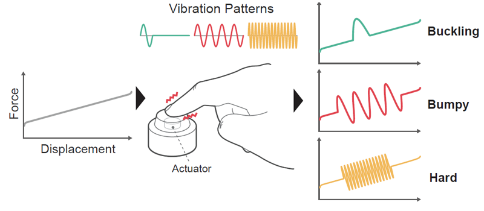
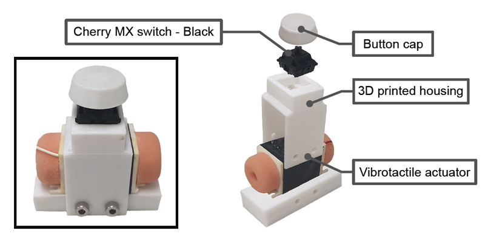
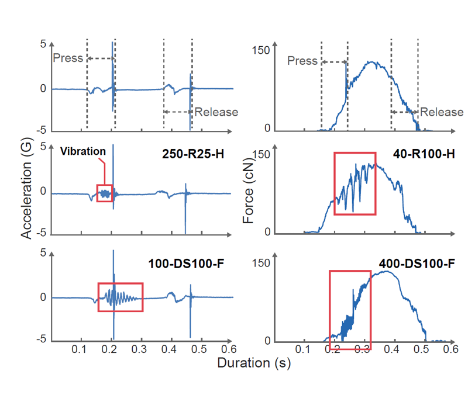
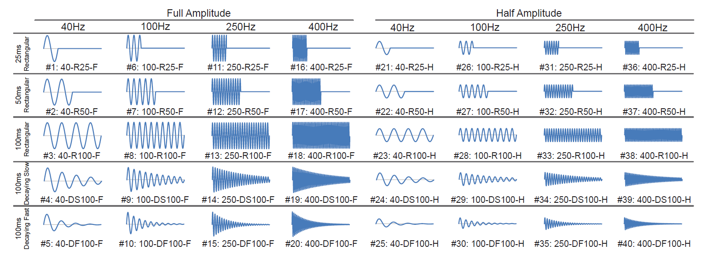
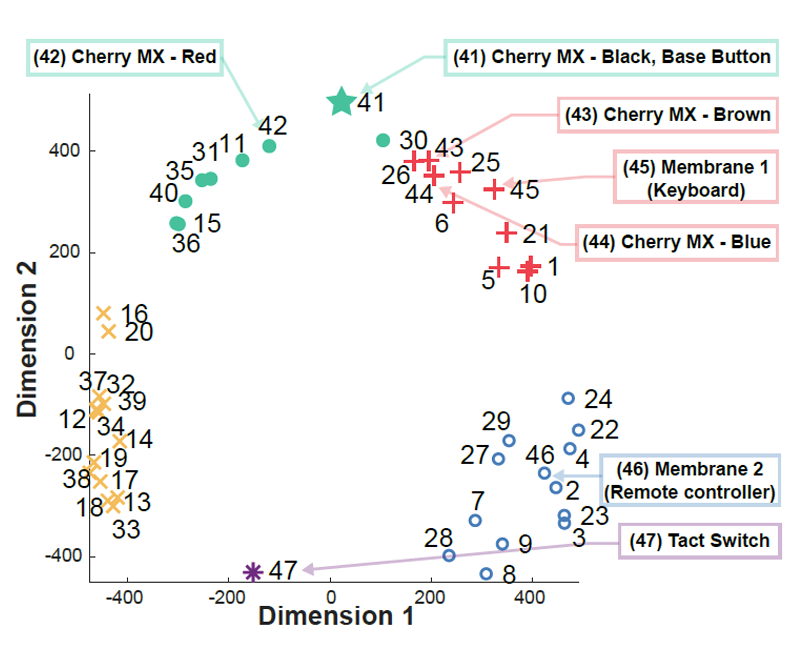
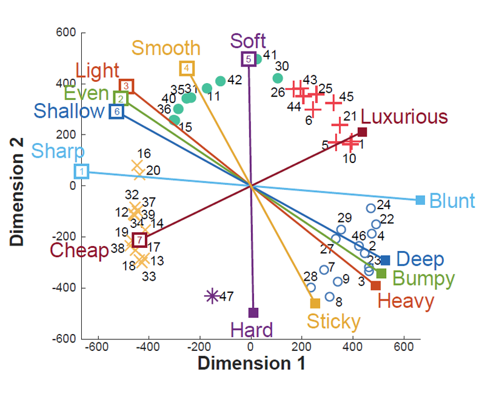

PROGRAMMABLE BUTTON
with augmented vibrotactile sensations
Vibration-Augmented Buttons: Information Transmission Capacity and Application to Interaction Design
ACM conference on Human Factors in Computing Systems (CHI'22)
ABSTRACT
One can embed a vibration actuator to a physical button and augment the physical button’s original kinesthetic response with a programmable vibration generated by the actuator. Such vibration-augmented buttons inherit the advantages of both physical and virtual buttons. This paper reports the information transmission capacity of vibration-augmented buttons. It was obtained by conducting a series of absolute identification experiments while increasing the number of augmented buttons. The information transmission capacity found was 2.6 bits, and vibration-augmented and physical buttons showed similar abilities in rendering easily recognizable haptic responses. In addition, we showcase a VR text entry application that utilizes vibration-augmented buttons. Our method provides several error messages to the user during text entry using a VR controller that includes an augmented button. We validate that the variable haptic feedback improves task performance, cognitive workload, and user experience for a transcription task.
FULL CITATION
Chaeyong Park, Jeongwoo Kim, Dong-Geun Kim, Seungjae Oh, and Seungmoon Choi. 2022. Vibration-Augmented Buttons: Information Transmission Capacity and Application to Interaction Design. In CHI Conference on Human Factors in Computing Systems (CHI '22). ACM, 1–13. https://doi.org/10.1145/3491102.3501849
FIGURES

(Teaser image) The force response of a physical button is augmented with a vibration generated by an actuator. This simple technology affords a variety of distinct and programmable feels to one physical button.

The overall design of our augmented button hardware. Both the cap and housing were 3D printed using polylactide flament. The housing also contains a voice coil type vibration actuator (Haptuator BM3C, Tactile Labs) clenched by bolt binding.

Acceleration and force profles visualizing the effects of vibration augmentation on physical button click. The top row shows the responses of the physical button itself, and the rest is for augmented ones.

Forty vibration waveforms for button augmentation. Each waveform is represented by a number and a code of parameter values: Frequency (40, 100, 250, 400)-Envelope (R25, R50, R100, DS100, DF100)-Amplitude (F, H). Each notation will be used depending on adequacy.

The result of user experiment 1. 2D perceptual space of the 47 augmented and physical buttons. The star represents the base physical button #41 without vibration feedback. Groups found by hierarchical clustering are represented by the same colors and symbols.

The result of user experiment 2. Adjective pairs regressed into the 2D perceptual space. The length of each axis is proportional to the R2 value of the regression, indicating the degree of fit.